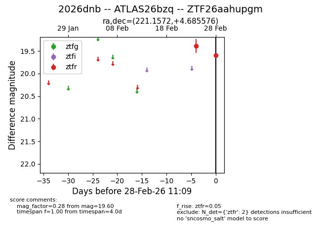
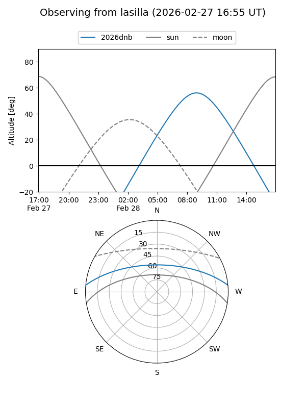
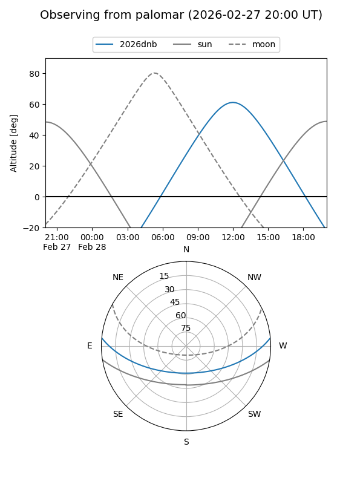

2026dnb
Target 2026dnb at 2026-02-28 11:10
Aliases and brokers:
FINK: link
Lasair: link
ALeRCE: link
TNS: link
YSE: link
alt names
ZTF26aahupgm (ztf,fink_ztf)
2026dnb (tns,yse)
ATLAS26bzq (atlas)
Coordinates:
equatorial (ra, dec) = 221.1572,+4.68558
equatorial (HMS+DMS) = 14:44:37.72,+04:41:08.07
galactic (l, b) = (358.2076,+54.91105)
Flags:
Photometry:
last ztfr=19.60
2 ztfr detections
Lightcurve

Visibility


Additional plots